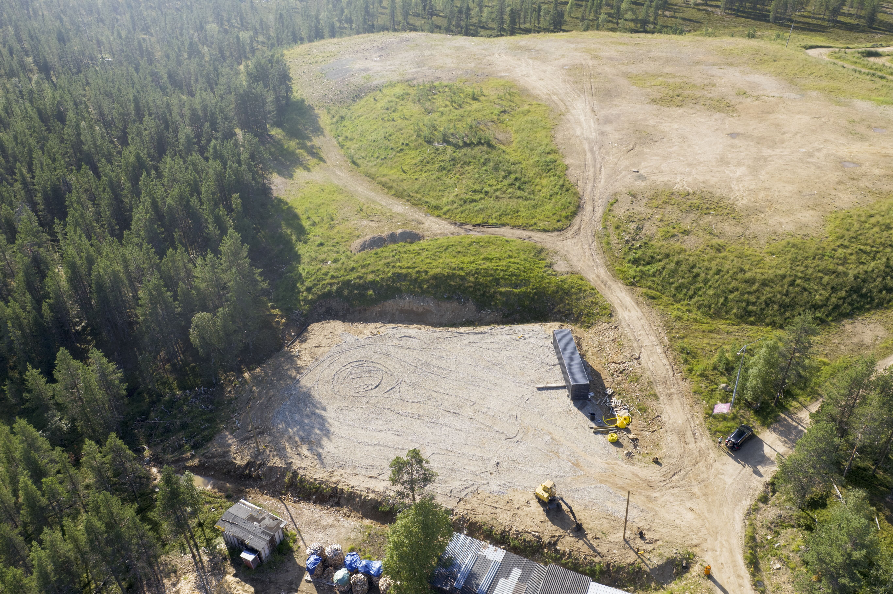
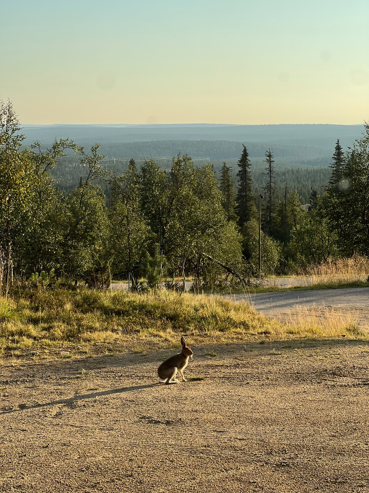
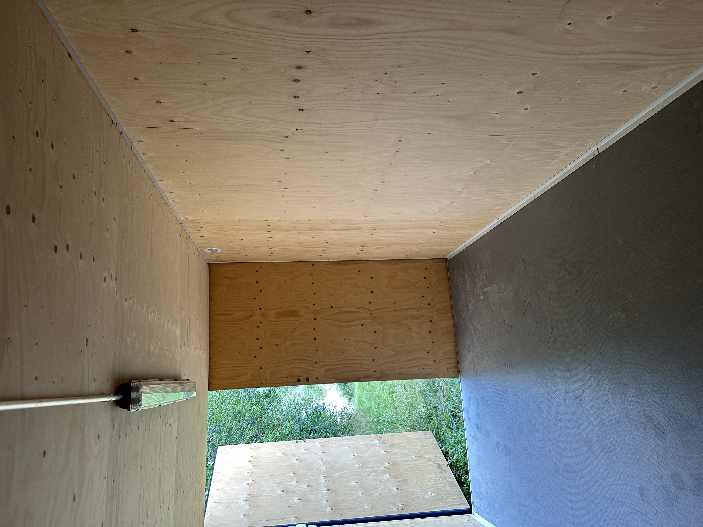

KUVAT






Varastotilaa Saariselällä - Tunturivarikko tarjoaa monipuoliset varastoratkaisut Saariselän alueella. Vuokraa varastotilaa moottorikelkoille, harrastusvälineille ja muulle kalustolle.
Varastotilat Saariselällä - Tunturivarikko Jemmassa tarjoaa monipuoliset ja käytännölliset ratkaisut turvalliseen ja huolettomaan säilytykseen kaikille asiakkaille, olipa kyseessä moottorikelkat, harrastusvälineet tai muu säilytystarve. Vuokraa varastotilaa Saariselällä ja unohda säilytyshuolesi – keskity nauttimaan pohjoisen elämyksistä, me hoidamme loput!
Tunturivarikolla saat käyttöösi varastotilaa, joka on suunniteltu juuri säilyttämiseen – emme vuokraa kontteja, vaan tarjoamme toimivaa ja turvallista säilytystilaa valmiissa yksiköissä.
Video Tunturivarikon alueesta Saariselällä
Varastotilaa Saariselällä on saatavilla Tunturivarikon kautta. Tarjoamme lämpimiä tallikontteja, kylmiä sisätiloja ja pihapaikkoja eri tarpeisiin. Vuokraa varastotilaa Saariselällä ja nauti huolettomasta säilytyksestä pohjoisen luonnossa.